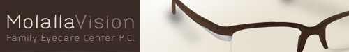

Welcome to Chasery.com v2, a newly refined version of my, Ryan Chase's, Web Development and Design portfolio! This newer site version reflects my further growth and understanding of Web Development standards in XHTML, CSS, and SEO. Over the last ten or so years, I have become a self taught Graphic Designer and Web Developer. I excel in XHTML, CSS, Photoshop, and am now developing skills in digital photography along with Illustrator.
Here I thought I would never see the day that I got around to finishing this site, but I did it. I just finished the contact form on my contact page. With that, chasery.com is now fully functional. Test out the contact page and elt me know what you think.
Over this week I have made major advancements in the completion of this site. I am excited to potentially have this Portfolio done by the end of this weekend.
This evening I sat down and got Smoothbox working. The exciting part is this one is fully CSS compliant. With a little tweaking, I am super happy with the results.
I was contacted by a friend that needed a layout for a small eye care clinic website he is developing, here is what I came up with! I am pretty proud of those glasses, it took some time building all of the layers, but I feel the look came out feeling unique and great.
It is been quite some time since I have worked on my portfolio. I have some new pieces to add to my gallery. A work that specifically comes to mind is a website I helped build for a friend and his company, Vhektor Interactive, together we built Portland Choirs. I did a great majority of the HTML and CSS for the Portland Choirs site which gave me quite a bit more knowledge on how to handle different aspects of CSS documents. Over all, I am happy that it turned out looking professional and the people over at Portland Choirs are ecstatic about their final product!
Welcome to the launch Chasery.com v2, a newly refined version of my, Ryan Chase's, Web Development and Design portfolio! Over the coming months, you will be able to see the development of my Web Portfolio here!
{kind=link}